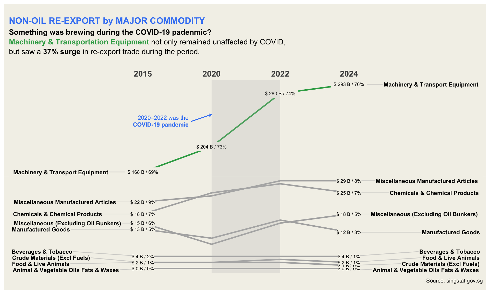

pacman::p_load(tidyverse, lubridate, gridExtra,
CGPfunctions,patchwork,ggthemes,gganimate,
ggtext,scales,patchwork,ggrepel,
ggridges, ggdist, ggiraph, plotly,
knitr,ggiraph,ggstatsplot,readxl
)Take-Home Exercise 2: Be Tradewise or Otherwise
note:
The website should add explanations for the relationships between merchandise trade, imports and exports (domestic export + re-export), and highlight the difference between diff export type and export of service
https://www.singstat.gov.sg/modules/infographics/singapore-international-trade
makeover:
MERCHANDISE TRADE PERFORMANCE WITH MAJOR TRADING PARTNERS, 2024
The plot clearly shows the net export deficit and surplus partners of Singapore. However, it would be more interesting and informative if we can make it into an animation.
Non-oil re-exports
The data is organized in the shape of boats, which is creative and attractive. However, due to ships being displayed vertically and sparse data points, it’s difficult to read the information. Additionally, it only shows data from 2024, so we cannot see the variations between years. May use newggslopegraph to show the trend.
Import of Service
It uses different icons and colors to highlight different service sectors, which make it easier for users to recognize the import amount and percentage by service sectors from the graph. However, since the number of service sectors is 12, it is a bit messy to display the information by pie chart.
May consider:
- Combine the service industries with lower proportions (5%), such as insurance and finance
- Use tree map and animation to show the variations between years and sectors.
1 Overview
Since Mr. Donald Trump took office as the President of the United States on January 20, 2025, one of the most closely watched topics has been global trade.
As a visual analytics novice, you are eager to apply newly acquired techniques to explore and analyze the changing trends and patterns of Singapore’s international trade since 2015.
2 Getting Started
Use the pacman package p_load() to check, install and launch the following R packages:
| Library | Description |
|---|---|
| tidyverse | a family of R packages for data processing |
| Plotly R | an R package for creating interactive web-based graphs via plotly’s JavaScript graphing library. |
Use read_excel function to import xlsx files:
m_import <- read_excel("data/SGTrade_byCountry.xlsx",sheet = "T1",range="A11:BJ171")
m_export <- read_excel("data/SGTrade_byCountry.xlsx",sheet = "T2",range="A11:BJ171")
m_re_export <- read_excel("data/SGTrade_byCountry.xlsx",sheet = "T3",range="A11:BJ171")kable(head(m_import,10))| Data Series | 2025 Jan | 2024 Dec | 2024 Nov | 2024 Oct | 2024 Sep | 2024 Aug | 2024 Jul | 2024 Jun | 2024 May | 2024 Apr | 2024 Mar | 2024 Feb | 2024 Jan | 2023 Dec | 2023 Nov | 2023 Oct | 2023 Sep | 2023 Aug | 2023 Jul | 2023 Jun | 2023 May | 2023 Apr | 2023 Mar | 2023 Feb | 2023 Jan | 2022 Dec | 2022 Nov | 2022 Oct | 2022 Sep | 2022 Aug | 2022 Jul | 2022 Jun | 2022 May | 2022 Apr | 2022 Mar | 2022 Feb | 2022 Jan | 2021 Dec | 2021 Nov | 2021 Oct | 2021 Sep | 2021 Aug | 2021 Jul | 2021 Jun | 2021 May | 2021 Apr | 2021 Mar | 2021 Feb | 2021 Jan | 2020 Dec | 2020 Nov | 2020 Oct | 2020 Sep | 2020 Aug | 2020 Jul | 2020 Jun | 2020 May | 2020 Apr | 2020 Mar | 2020 Feb | 2020 Jan |
|---|---|---|---|---|---|---|---|---|---|---|---|---|---|---|---|---|---|---|---|---|---|---|---|---|---|---|---|---|---|---|---|---|---|---|---|---|---|---|---|---|---|---|---|---|---|---|---|---|---|---|---|---|---|---|---|---|---|---|---|---|---|
| Total All Markets | 54746.4 | 56135.9 | 51802.1 | 51415.6 | 49068.4 | 49949.0 | 52965.2 | 48845.9 | 52681.4 | 52901.0 | 51339.9 | 45008.5 | 49246.6 | 45253.9 | 49402.4 | 51889.5 | 48959.2 | 49260.0 | 46574.6 | 46726.3 | 45562.0 | 44966.7 | 51593.3 | 42748.4 | 44382.9 | 49869.8 | 50653.9 | 53182.9 | 55799.3 | 58466.0 | 61029.4 | 59649.2 | 57604.3 | 56116.0 | 58080.0 | 44958.4 | 50026.8 | 54349.4 | 50674.9 | 47945.2 | 45980.4 | 44714.5 | 46107.8 | 45039.8 | 41559.7 | 45169.5 | 47668.4 | 37643.7 | 39028.6 | 40154.5 | 38477.9 | 38173.8 | 38801.4 | 36472.3 | 37843.6 | 35120.9 | 31458.2 | 35878.8 | 40433.0 | 39472.6 | 41180.2 |
| America | 6923.3 | 7873.7 | 7879.6 | 8077.6 | 9112.0 | 8581.4 | 8462.0 | 7611.1 | 8388.0 | 8971.9 | 7279.1 | 6398.3 | 6711.7 | 7171.9 | 7907.6 | 7514.7 | 6991.3 | 8087.7 | 6766.8 | 7887.7 | 6445.0 | 6590.1 | 7555.1 | 6008.9 | 6226.7 | 6901.5 | 7529.4 | 7666.4 | 7995.9 | 8633.8 | 7879.7 | 8024.0 | 8521.1 | 7822.1 | 7176.1 | 5385.2 | 5850.9 | 6261.1 | 6127.4 | 6027.6 | 5631.6 | 5750.1 | 5728.6 | 5457.4 | 5191.8 | 6195.9 | 5303.5 | 4164.2 | 4580.0 | 4676.4 | 4588.2 | 4869.7 | 4886.4 | 4132.0 | 4667.3 | 4686.2 | 4259.0 | 5183.5 | 5910.8 | 5314.1 | 5844.1 |
| Antigua And Barbuda | 0.0 | 0.0 | 0.0 | 0.0 | 0.0 | 0.0 | 0.0 | 0.0 | 0.0 | 0.0 | 0.0 | 0.0 | 0.2 | 0.0 | 0.0 | 0.0 | 0.0 | 0.0 | 0.0 | 0.0 | 0.0 | 0.0 | 0.0 | 0.0 | 0.0 | 0.0 | 0.0 | 0.0 | 0.0 | 0.0 | 0.0 | 0.0 | 0.0 | 0.0 | 0.0 | 0.0 | 0.0 | 0.0 | 0.0 | 0.0 | 0.0 | 0.0 | 0.0 | 0.0 | 0.0 | 0.0 | 0.0 | 0.0 | 0.0 | 0.0 | 0.0 | 0.0 | 0.0 | 0.0 | 0.0 | 0.0 | 0.0 | 0.0 | 0.0 | 0.0 | 0.0 |
| Argentina | 4.0 | 12.5 | 116.2 | 4.1 | 8.1 | 7.2 | 6.6 | 17.2 | 13.9 | 18.3 | 42.4 | 45.1 | 35.6 | 37.3 | 40.4 | 7.9 | 5.7 | 8.3 | 8.8 | 5.2 | 8.6 | 29.1 | 6.9 | 5.5 | 8.3 | 11.3 | 6.8 | 14.9 | 13.2 | 11.8 | 10.3 | 11.6 | 16.4 | 6.3 | 6.7 | 8.3 | 9.7 | 11.4 | 6.8 | 4.1 | 6.4 | 3.7 | 5.2 | 5.0 | 5.0 | 8.7 | 3.1 | 2.9 | 22.0 | 6.3 | 29.7 | 5.1 | 3.6 | 5.4 | 33.6 | 4.4 | 5.1 | 6.5 | 16.5 | 3.1 | 6.2 |
| Bahamas | 0.0 | 8.1 | 0.0 | 0.0 | 0.0 | 0.0 | 0.0 | 0.0 | 0.0 | 19.8 | 0.0 | 0.0 | 0.0 | 0.0 | 0.0 | 0.0 | 0.0 | 0.0 | 0.0 | 0.0 | 0.0 | 0.1 | 0.2 | 0.0 | 0.0 | 0.0 | 0.0 | 0.0 | 0.0 | 0.0 | 0.0 | 14.7 | 0.0 | 0.0 | 0.0 | 0.0 | 0.0 | 7.3 | 0.0 | 0.0 | 20.6 | 0.0 | 29.5 | 0.0 | 0.0 | 33.3 | 0.0 | 0.0 | 118.6 | 0.0 | 152.9 | 0.1 | 13.7 | 6.2 | 63.1 | 0.0 | 0.0 | 0.0 | 0.0 | 37.1 | 0.0 |
| Bermuda | 0.0 | 0.0 | 0.0 | 0.0 | 0.0 | 0.0 | 0.1 | 0.0 | 0.0 | 0.0 | 1.0 | 0.0 | 0.0 | 0.0 | 0.0 | 0.0 | 0.0 | 0.0 | 0.0 | 0.0 | 0.0 | 0.0 | 0.0 | 0.0 | 0.0 | 0.0 | 0.0 | 0.0 | 0.0 | 0.0 | 0.0 | 0.0 | 0.0 | 0.0 | 0.0 | 0.0 | 0.0 | 0.0 | 0.0 | 0.0 | 0.0 | 0.0 | 0.0 | 0.0 | 0.0 | 0.0 | 0.0 | 0.0 | 0.0 | 0.0 | 0.0 | 0.0 | 0.0 | 0.0 | 0.0 | 0.0 | 0.0 | 0.0 | 0.0 | 0.0 | 0.1 |
| Brazil | 870.2 | 586.8 | 942.4 | 639.9 | 786.6 | 550.6 | 1555.9 | 522.9 | 1205.4 | 734.0 | 574.8 | 715.0 | 506.8 | 597.2 | 477.2 | 583.1 | 835.3 | 543.0 | 666.2 | 704.1 | 658.0 | 876.2 | 787.2 | 565.0 | 516.9 | 1004.2 | 1132.9 | 917.5 | 833.3 | 968.7 | 928.9 | 1070.9 | 954.9 | 836.5 | 516.5 | 458.5 | 795.0 | 340.5 | 661.0 | 671.5 | 491.7 | 464.8 | 550.5 | 481.4 | 459.1 | 572.1 | 328.8 | 173.9 | 283.0 | 304.5 | 302.1 | 153.7 | 510.8 | 204.3 | 190.3 | 418.1 | 288.8 | 237.6 | 310.9 | 331.2 | 404.7 |
| Canada | 267.5 | 212.7 | 221.6 | 323.8 | 236.5 | 224.4 | 244.2 | 240.4 | 321.4 | 731.1 | 261.1 | 248.1 | 480.8 | 210.0 | 234.3 | 231.1 | 206.5 | 239.2 | 223.1 | 192.9 | 298.6 | 230.8 | 275.1 | 218.1 | 202.8 | 211.2 | 224.9 | 213.6 | 241.0 | 599.5 | 284.9 | 215.6 | 200.8 | 204.5 | 253.6 | 197.8 | 227.7 | 208.1 | 174.5 | 160.5 | 206.7 | 190.4 | 135.9 | 156.6 | 161.7 | 154.3 | 158.2 | 148.1 | 143.8 | 143.0 | 141.0 | 153.1 | 93.7 | 149.8 | 186.8 | 178.3 | 148.8 | 248.4 | 228.5 | 200.2 | 568.8 |
| Chile | 12.6 | 5.7 | 8.0 | 7.1 | 2.3 | 5.0 | 11.3 | 19.2 | 12.8 | 5.1 | 8.0 | 23.4 | 13.1 | 9.8 | 10.4 | 6.6 | 8.4 | 9.5 | 5.9 | 7.0 | 8.8 | 11.3 | 10.0 | 8.1 | 14.6 | 16.6 | 13.8 | 11.6 | 29.6 | 75.5 | 20.1 | 11.0 | 15.5 | 9.5 | 17.1 | 36.6 | 8.9 | 14.4 | 5.4 | 7.4 | 4.3 | 3.1 | 18.9 | 8.6 | 7.2 | 37.3 | 9.9 | 6.5 | 7.9 | 6.5 | 4.8 | 5.6 | 6.4 | 4.7 | 5.7 | 6.0 | 5.0 | 4.5 | 6.8 | 7.3 | 7.7 |
| Colombia | 17.6 | 19.4 | 9.2 | 2.4 | 3.3 | 5.7 | 2.7 | 2.5 | 13.2 | 59.6 | 15.1 | 0.8 | 1.0 | 1.4 | 3.5 | 1.3 | 7.5 | 2.9 | 28.9 | 2.1 | 24.6 | 7.8 | 1.9 | 6.3 | 2.2 | 7.9 | 4.4 | 2.2 | 10.5 | 9.8 | 1.9 | 84.4 | 50.7 | 16.1 | 29.5 | 5.5 | 87.6 | 6.3 | 36.4 | 2.2 | 39.8 | 2.3 | 49.0 | 45.3 | 1.9 | 5.4 | 1.7 | 4.6 | 3.5 | 114.8 | 5.3 | 2.5 | 1.5 | 0.7 | 8.2 | 1.5 | 8.6 | 2.9 | 4.4 | 0.9 | 33.2 |
#str(pop_data)#summary(pop_data)any(is.na(m_import))[1] FALSEany(is.na(m_export))[1] FALSEany(is.na(m_re_export))[1] FALSEFrom the “Observe data” tab, we can see that age is a categorical variable. For better analysis, we should transpose this variable and group the ages into young, active, and old categories to make the data more interpretable:
There are 10 age groups in this dataset:
#pop_data %>% distinct(AG)# Adding new derived variables for the young, economy active and old age group3 GOV Trade Data Visualization Make-Over
3.1 MERCHANDISE TRADE PERFORMANCE WITH MAJOR TRADING PARTNERS, 2024
Pros: Use the diagonal line and blocks to clearly show net export deficit and surplus partners of Singapore
Cons: It only shows 2024 mechandise data, so it cannot offer a complete view of merchandise trade trends in recent years
Make-Over Suggestion: Use animation combining years of data to enhance data storytelling
3.1.1 Import data
m_import <- read_excel("data/SGTrade_byCountry.xlsx",sheet = "T1",range="A11:DR171")
m_export <- read_excel("data/SGTrade_byCountry.xlsx",sheet = "T2",range="A11:DR171")
m_re_export <- read_excel("data/SGTrade_byCountry.xlsx",sheet = "T3",range="A11:DR171")3.1.2 Data processing
# rename the col name of country
colnames(m_export)[1] <- "country"
colnames(m_re_export)[1] <- "country"
colnames(m_import)[1] <- "country"
# copy the structure and transform it to long df
m_by_country <- m_export %>%
gather(key = month_year, value="export",-country)
m_re_export_long <- m_re_export %>%
gather(key = month_year, value="re_export",-country)
m_import_long <- m_import %>%
gather(key = month_year, value = "import",-country)
# join all data together
m_by_country <- m_by_country %>%
left_join(m_re_export_long,by=c("country","month_year")) %>%
left_join(m_import_long, by = c("country","month_year")) %>%
mutate(total_trade = round(export+re_export+import,1),
net_export = round((export+re_export)-import,1),
abs_net_export = abs(round((export+re_export)-import,1)),
year = as.integer(substr(month_year,1,4)))%>%
filter(year != 2025)
# create yearly data
m_by_country_year <- m_by_country %>%
group_by(country,year) %>%
summarise(across(c("export","re_export","import","net_export","abs_net_export","total_trade"),~sum(.x, na.rm = TRUE)/1000),.groups="drop")
# filter continent only
m_by_continent_year <- m_by_country_year %>%
filter(country %in% c("America","Asia","Europe","Oceania","Africa","Total All Markets"))
# filter country only
m_by_country_year <- m_by_country_year %>%
filter(!country %in% c("America","Asia","Oceania","Africa","Total All Markets"))
# calculate avg net export
m_by_country_avg <- m_by_country_year %>%
group_by(country)%>%
summarise(across(c("export","re_export","import","net_export","abs_net_export","total_trade"),~round(mean(.x),1)),.groups="drop") %>%
arrange(desc(total_trade))
# top 5 postive net export countries for SG
top_10_m_trade <- m_by_country_avg$country[1:10]
# filter top 10 trade countries
top_10_trade_country <- m_by_country_year %>%
filter(country %in% top_10_m_trade) %>%
mutate(total_export = re_export + export)
country_abbr <- c(
"Hong Kong" = "HK",
"Indonesia" = "ID",
"Malaysia" = "MY",
"Thailand" = "TH",
"China" = "CN",
"Taiwan" = "TW",
"United States" = "US",
"Europe" = "EU",
"Korea, Rep Of" = "KR",
"Japan" = "JP"
)
top_10_trade_country <- top_10_trade_country %>%
mutate(country_abbr = country_abbr[country])summary(top_10_trade_country) country year export re_export
Length:100 Min. :2015 Min. : 7.469 Min. : 9.172
Class :character 1st Qu.:2017 1st Qu.:10.405 1st Qu.:14.340
Mode :character Median :2020 Median :17.473 Median :20.471
Mean :2020 Mean :19.526 Mean :24.524
3rd Qu.:2022 3rd Qu.:28.046 3rd Qu.:29.421
Max. :2024 Max. :40.025 Max. :63.399
import net_export abs_net_export total_trade
Min. : 2.965 Min. :-51.8489 Min. : 2.104 Min. : 28.97
1st Qu.:20.508 1st Qu.:-13.6179 1st Qu.: 7.043 1st Qu.: 53.91
Median :37.136 Median : 0.2195 Median :12.743 Median : 71.68
Mean :41.546 Mean : 2.5035 Mean :18.857 Mean : 85.60
3rd Qu.:65.744 3rd Qu.: 10.4078 3rd Qu.:23.965 3rd Qu.:117.50
Max. :89.635 Max. : 76.3764 Max. :76.376 Max. :175.03
total_export country_abbr
Min. :19.01 Length:100
1st Qu.:24.64 Class :character
Median :41.96 Mode :character
Mean :44.05
3rd Qu.:59.37
Max. :94.44 3.1.3 Plotting

3.2 Non-oil re-exports
Pros: Creative and attractive visual design (data shaped like boats)
Cons:
Only shows 2024 data, making it hard to compare trends over time and less meaningful
Difficult to read due to vertical ship display and sparse data points
Make-Over Suggestion: Use newggslopegraph to show trends over multiple years
3.2.1 Import data and Data Processing
com_re_export <- read_excel("data/SGTrade_byCommodity.xlsx",sheet = "T1",range="A11:DR79")
non_oil_re_export <- com_re_export[-(1:59),]
colnames(non_oil_re_export)[1] = "commodity"
non_oil_re_export <- non_oil_re_export %>%
gather(key="month_year",value="re_export",-commodity)%>%
mutate(year = as.ordered(substr(month_year,1,4)))%>%
filter(year %in% c(2015,2020,2022,2024))%>%
group_by(commodity,year)%>%
summarise(re_export = round(sum(re_export,na.rm=TRUE)/1000000),.groups = "drop")3.2.2 Plotting

3.3 Import of Service
Pros:
Icons and colors help differentiate service sectors, making it visually appealing
Allows users to easily recognize import amounts and percentages
Cons:
Too cluttered (12 service sectors in a pie chart)
Hard to compare variations across years
Make-Over Suggestion:
Combine smaller sectors (below 5%, e.g., insurance and finance).
Use a tree map to improve readability.
Add animation to show changes over years and across sectors.
4 Reference
- Kam, T.S. (2025).
https://stackoverflow.com/questions/74015542/adding-a-shaded-triangle-to-a-ggplot2-plot